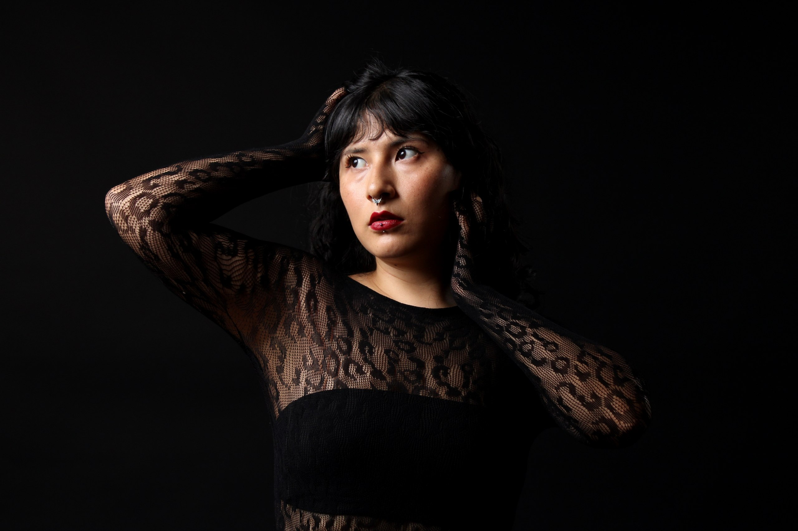
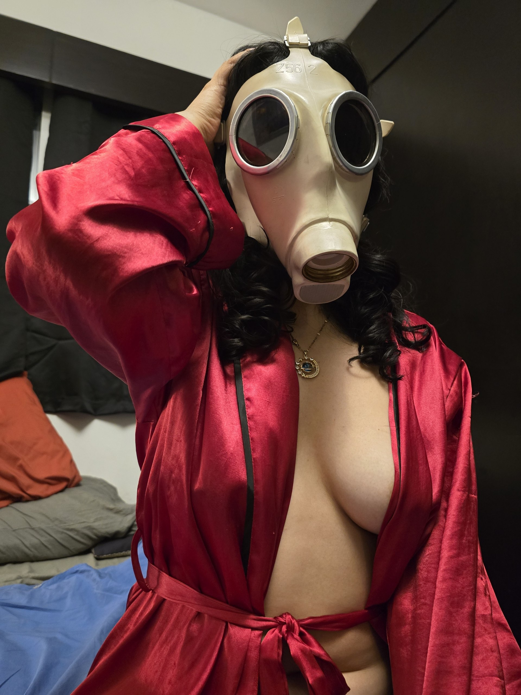
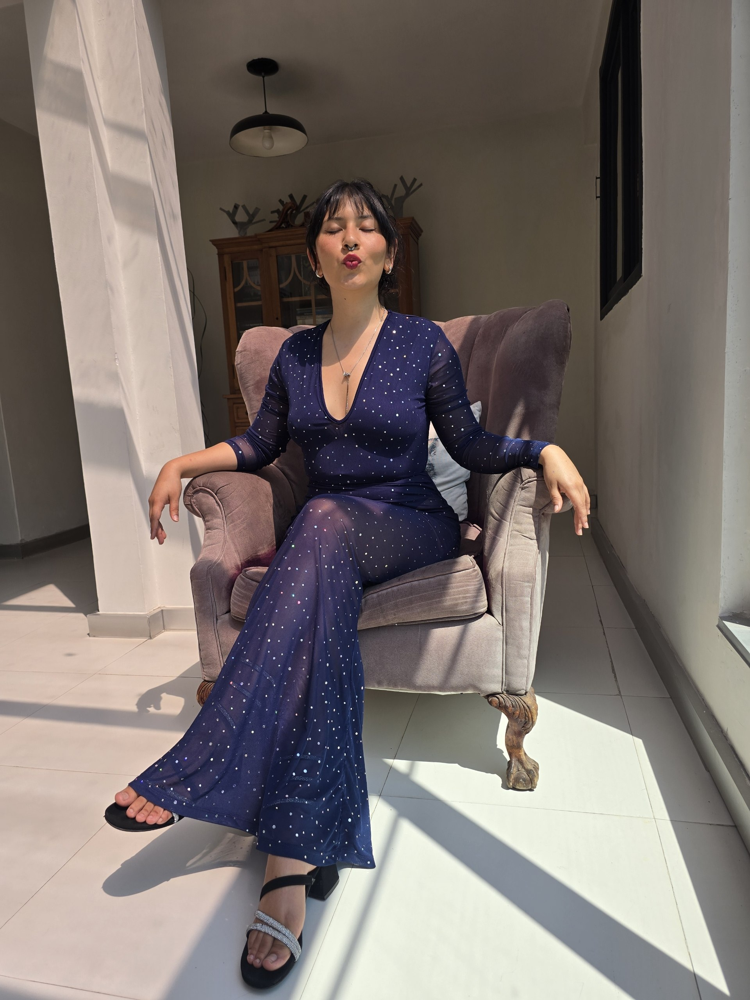
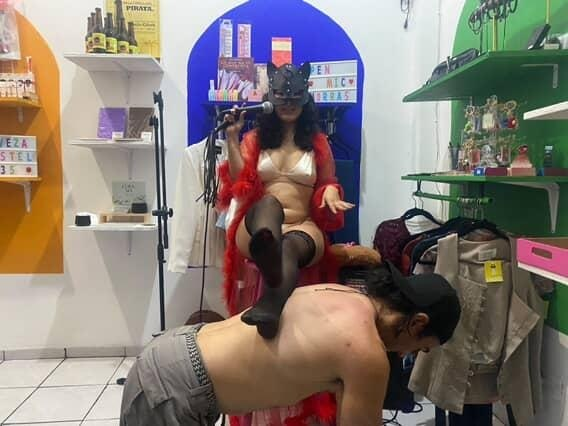

Ginny Delice
«Vivir en placer ha cambiado mi vida y podría transformar la tuya.»
Desciende despacioSi sigues leyendo puede ser que estés interesado en conectar con tu placer, quieres conocerte a ti mismo, o algo en ti pide experimentar una transformación profunda entre tu cuerpo y tu placer.
El espacio que busco crear contigo es uno en el que puedas practicar el placer en cualquier forma que tú quieras experimentar.
El placer es algo que se entrena, se practica, y cuantas más veces se experimenta, más formas de habitarlo se expresan en tu vida.

El primer acto de intención
Muchos hombres solo buscan mi atención y tiempo sin sentido real de contratar mis servicios, por lo que el proceso es el siguiente. No es un obstáculo: es la primera forma de decirme que vas en serio.
«Sin captura no hay conversación.»
Un regalo de mi wishlist
Envíame algo de mi lista de deseos de Amazon.
Ver wishlist · pendienteUna transferencia
Un monto de tres cifras o más a la siguiente cuenta:
Paso 2 · Envíame la captura de tu regalo o transferencia. Sin ella no hay conversación.
Lo que puede ocurrir entre nosotros
Nada está a la vista de golpe. Abre solo aquello que despierte tu deseo; los precios aparecen cuando decides mirar de cerca.
Desde donde estés, sin cruzar la ciudad.
Suscripciones
Stripchat
Puedes acceder a miles de archivos por una suscripción de 500 tk al mes. My Fan Club | Stripchat.
Telegram VIP
- Mensualidad $500 MXN o 30 USD.
- Pago del 25 al 30 de cada mes; envíame tu comprobante al Telegram.
- Accedes el día 1 del mes natural.
- Subo contenido sensual 3 veces por semana.
- Promoción de inicio: tarifa fija durante 1 año para los primeros 5 suscriptores.
Novia Online
Semana · $1,500Mes · $4,500
Incluye
- Mensaje por la mañana y por la noche, 5 días a la semana.
- Fotos de mi día a día (ver una vez).
- Una hora de sexteo a la semana, a acordar el día.
- 5 fotos sensuales a la semana.
- Con la posibilidad de cultivar una relación personal real si hay química entre los dos. Esto no cambia el pago, pero cambia la profundidad de la relación.
Extras que puedes solicitar por un monto adicional: llamadas acordadas, videos cortos, audios.
Si me consientes con regalos, transferencias espontáneas, pagos de otras cosas como manicura, pedicura, ropa, salidas, etc., también recibirás más atenciones de mi parte.
Packs de fotos
Del repertorio · $800 x 6 fotos
Puedes elegir: bikini en la playa, nude en la playa, set de motomami, boudoir, lencería…
Exclusivas · desde $1,000 x 6 fotos
Puedes pedir ángulo, tipo de ropa, temática. El precio puede aumentar dependiendo de la petición.
Promoción del mes · Mix sorpresa
$500 x 6 fotos del repertorio.
Videos a petición
$2,500 Duración de 15 a 25 min de contenido.
Sexting
- $500 por 30 min
- $200 por 15 min extra
Audios
A petición: lecturas eróticas, narración de fantasías, roleplay, gemidos… lo que se te antoje, podemos platicarlo.
Desde $400
Sesiones eróticas personalizadas

Servicio especializado en BDSM, juegos de roles y fetiches. La sesión estructurada incluye una entrevista online (30 min) para ver límites y fantasías.
La sesión dura 90 min, repartidos así
- 15 min de check-in.
- 60 min de juegos eróticos.
- 15 min de aftercare.
$2,500 x 90 min de videollamada
- 50% de anticipo para agendar la entrevista.
- 50% para apartar la sesión.
Videollamadas soft
No requieren entrevista. Se comparte un momento erótico que puede incluir baile erótico, striptease, plática hot, roleplay. NO INCLUYE PENETRACIÓN.
$700 x 30 min
Xalapa, Veracruz · en persona, con acuerdos claros.
Meet & Greet
Se hace en un espacio público, cafetería o restaurante de preferencia. Temas de interés de ambas partes.
1 hora · $8002 horas · $1,500
El consumo y transporte corren por tu cuenta.
Requisitos
Tributo, foto de INE, información del lugar de la cita, aseo minucioso y evitar perfumes fuertes.
Si en la cita solo hablas de tus temas de interés, se te cobrará como cita de acompañamiento emocional por cada hora.
Cita de acompañamiento
Se hace en un espacio público, cafetería o restaurante de preferencia. El tema que tú quieras platicar y que yo te escuche, te espejee, te aconseje desde mi experiencia humana.
$1,000 cada hora
El consumo y transporte corren por tu cuenta.
Requisitos
Tributo, foto de INE, información del lugar de la cita, aseo minucioso y evitar perfumes fuertes.
Cuddle Date
Básico · 2 horas. $3,000
Incluye
- Conversación.
- Abrazos.
- Tomarse de las manos.
- Escuchar música.
- Descansar juntos.
- Acuerdos claros sobre el contacto físico.
No incluye actividad sexual. El consentimiento puede modificarse en cualquier momento. Se acuerdan previamente las formas de contacto físico. Higiene personal obligatoria. Entrevista previa para nuevos clientes. Me reservo el derecho de rechazar solicitudes que no sean compatibles con el espíritu del servicio. El espacio y transporte corren por tu cuenta.
Acompañamiento a eventos

Acompañante social, sensual y conversacional para hombres que desean una presencia femenina agradable, inteligente, versátil y auténtica.
Eventos a los que puedo acompañarte
Bodas, cenas de negocios, graduaciones, eventos corporativos, galas o premiaciones, conciertos, obras de teatro, exposiciones de arte, ferias y congresos.
Tiempo de acompañamiento
2 a 3 h · $4,0004 a 6 h · $6,000+6 h · +$8,000
Si implica traslado largo, permanecer hasta la madrugada, viajar fuera de la ciudad o vestimenta especial, se cobrará extra.
Incluye: mi tiempo, conversación, presencia en el evento.
No incluye: vestido especial, zapatos especiales, maquillaje profesional, hospedaje, transporte.
Si quieres un look muy específico («vestido de gala negro, tacones y peinado profesional»), entonces cubres los gastos o me haces llegar las prendas elegidas.
¿Qué sí se puede?
- Tomarse fotos juntos.
- Tomarse de la mano.
- Bailar.
- Beso en mejilla.
- Presentarse como pareja o algún otro roleplay a acordar.
No está permitido
- Contacto sexual.
- Besos románticos.
- Dormir juntos.
- Consumo excesivo de alcohol.
- Eventos que incluyan drogas duras.
- Cambios de plan de última hora.
Ofrezco acompañamiento social, conversacional y presencial para personas neurodivergentes, con diversidad funcional, o para quienes prefieren una interacción basada en acuerdos claros, comunicación directa y respeto mutuo. Mi experiencia personal y profesional me ha permitido desarrollar habilidades para crear espacios cómodos, previsibles y libres de juicios, donde las necesidades de cada persona pueden expresarse con claridad.
Lo que puedo ofrecer
- Comunicación directa y explícita.
- Acuerdos claros antes del encuentro.
- Conversación respetuosa y adaptada a las necesidades de cada persona.
- Flexibilidad respecto a formas de interacción social.
- Posibilidad de establecer acuerdos específicos sobre contacto físico, temas de conversación, espacios de descanso y necesidades sensoriales.
- Acompañamiento en eventos sociales, culturales o recreativos.
- Presencia tranquila y sin presión para cumplir expectativas sociales tradicionales.
Tengo experiencia relacionándome cotidianamente con personas neurodivergentes y también acompañando a personas con distintas necesidades de accesibilidad física.
Entrevista previa
Antes de cualquier encuentro se realizará una entrevista inicial por chat, audio o videollamada. El objetivo es conocer:
- Necesidades específicas de apoyo o accesibilidad.
- Límites y expectativas de ambas partes.
- Preferencias de comunicación.
- Acuerdos sobre contacto físico, si aplica.
- Características del lugar o actividad propuesta.
La entrevista previa forma parte esencial del servicio.
Requisitos y principios
Requisitos para el encuentro
Debido a mi sensibilidad olfativa, solicito un aseo personal minucioso antes de los encuentros presenciales. Este requisito busca garantizar una experiencia cómoda para ambas partes y no constituye un juicio sobre la persona.
Pago de entrevista, foto de INE, información del lugar de la cita, aseo minucioso y evitar perfumes fuertes.
Principios del servicio
- Consentimiento continuo.
- Comunicación clara.
- Respeto mutuo.
- Autonomía de ambas partes.
- Posibilidad de renegociar acuerdos cuando sea necesario.
- Derecho de cualquiera de las partes a expresar incomodidades o necesidades durante el encuentro.
Cada persona es diferente. Por ello, el acompañamiento se construye de forma personalizada, considerando las necesidades, preferencias y límites de quienes participan.
Ejemplos y contrataciones
Convenciones friki, geek, anime, manga o videojuegos; ferias del libro; museos y exposiciones; conciertos; cine y funciones especiales; obras de teatro; cafeterías y salidas casuales; restaurantes; parques y espacios recreativos; eventos de cosplay; juegos de mesa o clubes de hobbies; actividades de rol presencial; festivales culturales; bodas o reuniones familiares; fiestas donde se prefiera contar con una persona de confianza; congresos o eventos académicos; compras de ropa o actividades cotidianas que resulten más cómodas en compañía.
También puede tratarse simplemente de compartir una actividad agradable: ver una película, conversar mientras se toma un café, pasear por la ciudad, visitar una librería, explorar intereses especiales o hobbies, compartir una comida, practicar habilidades sociales en un entorno seguro y respetuoso.
Contrataciones
Entrevista online · $500Hora · $1,000
No se tiene un objetivo terapéutico ni social específico. El acompañamiento consiste simplemente en disfrutar una experiencia en compañía de una persona con quien existen acuerdos claros, respeto mutuo y comunicación directa.
Formatos largos, colectivos y escénicos.
Acompañamiento vacacional
Disponible únicamente para personas con quienes ya exista experiencia previa de trabajo presencial. Se requiere haber contratado al menos dos servicios presenciales cortos antes de solicitar este formato.
Antes de aceptar una propuesta, necesito conocer: destino del viaje, fechas y duración, programa general de actividades, tipo de hospedaje, número de personas que asistirán.
La aceptación del servicio queda sujeta a disponibilidad, energía personal y compatibilidad. Me reservo el derecho de aceptar o rechazar cualquier propuesta sin que ello afecte la relación profesional o el trato cordial durante futuros servicios.
Condiciones
- El pago total se realiza por adelantado.
- Todos los gastos de transporte, eventos, hospedaje, alimentación, ropa especial o maquillaje profesional y traslados locales corren por cuenta del cliente.
- Es requisito indispensable contar con una habitación privada e individual para mí durante toda la estancia.
- La habitación deberá ser de calidad equivalente o superior a la del hospedaje general contratado para el viaje.
- Debo contar con un mínimo de 4 horas libres diarias para actividades personales.
- Debo contar con un mínimo de 8 horas continuas destinadas al descanso nocturno.
- Cualquier modificación importante del itinerario deberá comunicarse previamente.
- Los días de traslado se consideran días contratados.
Límites y derecho a finalizar
El acompañamiento vacacional no incluye contacto sexual. Si durante el viaje alguna actividad de carácter íntimo o sexual es propuesta para contratación, podré aceptarla o rechazarla libremente. Una negativa no modificará el trato amable, respetuoso y profesional durante el resto de la estancia.
La contratación de este servicio no implica exclusividad emocional, romántica, afectiva ni sexual.
Me reservo el derecho a suspender parcial o totalmente el acompañamiento y retirarme de la estancia en cualquier momento si considero que existen condiciones que afectan mi seguridad, bienestar, descanso, dignidad o integridad personal. Esto incluye, entre otros casos: trato irrespetuoso, hostil o humillante; presión para realizar actividades no acordadas previamente; incumplimiento de las condiciones de hospedaje, descanso o privacidad; situaciones que generen incomodidad significativa o sensación de inseguridad.
En caso de decidir finalizar el servicio anticipadamente, no existirá obligación de reembolso de los honorarios ya pagados. Asimismo, el cliente será responsable de cubrir los gastos necesarios para mi regreso seguro al lugar de origen.
Cuento con pasaporte vigente para viajes internacionales. Mi nivel de inglés es básico-conversacional.
Contrataciones
- Viajes locales (traslado de 1 o 2 horas en coche privado): desde $4,000 MXN por día o 250 USD por día.
- Viajes nacionales: desde $5,000 MXN por día / 300 USD por día.
- Viajes internacionales: desde $8,000 MXN por día / 500 USD por día.
Facilitación de eventos eróticos grupales
¿Tienes un grupo de amigos con curiosidad por el erotismo y no sabes cómo romper el hielo? ¿Te gustaría crear un espacio seguro para explorar la sensualidad, el juego, el BDSM o el erotismo colectivo, pero no quieres asumir la responsabilidad de organizarlo?
Puedo ayudarte. Mi trabajo consiste en diseñar, facilitar y acompañar experiencias eróticas para grupos adultos, cuidando la comunicación, los acuerdos, el consentimiento y la comodidad de las personas participantes.
Algunos ejemplos
Reuniones privadas para explorar el erotismo entre amistades; eventos para conocer personas con intereses afines; encuentros temáticos sobre BDSM; espacios de exploración sensual y corporal; dinámicas para romper el hielo y fomentar la confianza grupal; conversatorios y actividades sobre deseo, placer y consentimiento; eventos eróticos culturales y artísticos.
Lo que puedo aportar
Diseño de actividades, facilitación grupal, creación de acuerdos de convivencia, herramientas de consentimiento y comunicación, dinámicas de integración, mediación de conflictos, ambiente seguro y respetuoso.
Mi trabajo consiste en la organización, facilitación y acompañamiento del evento. La contratación de este servicio no implica participación sexual ni contacto íntimo con las personas asistentes. Cada evento se diseña según las necesidades del grupo y se cotiza de forma personalizada.
Desde $8,000 MXN Cotización personalizada de acuerdo al número de asistentes y tiempo del evento.
Artista invitada para eventos privados

¿Buscas una experiencia original, elegante y memorable para tu evento? Puedo participar como artista invitada en celebraciones privadas para personas adultas.
Formatos disponibles
Lecturas eróticas dramatizadas, narración de relatos sensuales, performance erótica, danza sensual, striptease artístico, intervenciones escénicas, conversatorios sobre erotismo/deseo/placer, dinámicas participativas para grupos.
Ideal para
Cumpleaños, despedidas de soltería, reuniones privadas, eventos temáticos, celebraciones de pareja, encuentros culturales, festivales alternativos.
Mi enfoque
Trabajo desde una visión artística, lúdica y respetuosa del erotismo. Las presentaciones están orientadas a la experiencia estética, emocional y sensorial. No incluyen servicios sexuales ni contacto íntimo con asistentes.
Desde $5,000
Objetos que llevan algo de mí.
Pantys usadas
Se entregan en un punto público a acordar. Incluye 3 fotos con ellas puestas. Puedes hacer peticiones: usadas en el gym, usadas de 2 días, usadas en fase ovulatoria, usadas durante masturbación.
$1,000
Otras peticiones de fluidos que aumentan el precio: squirteadas, con pipí, popó o menstruación.
¿Te interesa otro tipo de artículos personales usados? Envíame tributo acompañado de tu mensaje con lo que deseas.
Decoraciones eróticas SheLa
Pinturas eróticas, estampado de mis nalgas en tus camisas, esculturas eróticas u otros artículos artísticos.
@decoerotikshela